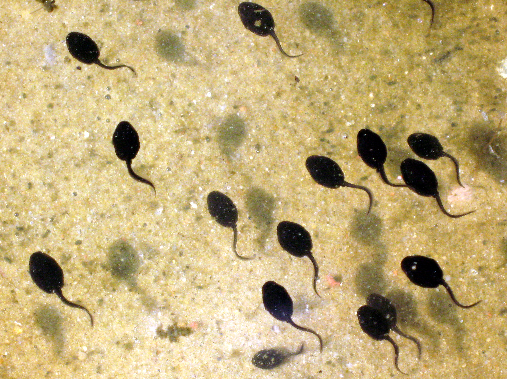

Mating and Reproduction
- What is the gestational period of the animal?
- Depending on the temperature of the water it can take anywhere from 1 to 3 week for a frogs to hatch into tadpoles.
- How many offspring does it typically have at a time?
- Female frogs can lay up to 4000 eggs at a time, that's a lot of brothers and sisters!
- How long do the offspring live with the parent?
- Frogs don't raise their tadpoles so after baby frogs hatch they are on their own in the world!